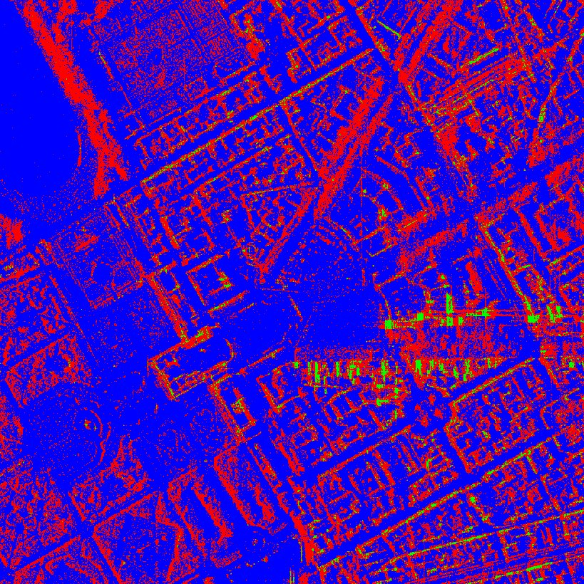

연구실적 · 국내전문학술지
다목적 위성 5호 고해상도 SAR 영상의 활용 방안 연구
A study on the application of high resolution K5 SAR images

초록
최근 고해상도 SAR 위성 영상의 확보가 용이해짐에 따라 활용 시장이 확대되고 있다. 광학 영상과 달리 위성 SAR 영상은 전천후환경에서 영상 획득이 가능하다. 특히 광학 영상으로 활용하기 힘든 화산 및 지진과 같은 재난 감시 수요가 증가 하였고, 또한 군사지역 및 인공지물의 모니터링에 대한 수요가 높아지고 있다. 고해상도 SAR 영상은 이러한 수요에 따라 활용할 수 있다. 본 논문에서는 X-band에서 운용되고 있는 KOMPSAT-5의 고해상도 위성 영상을 기반으로 변화탐지와 분류 활용 방안을 연구하였다. 변화탐지 방법으로는 ACD(Amplitude Change Detection), CCD(Coherence Change Detection)을 적용하였다. 각 기법에 대한 결과 영상을 각각 비교하여 융합할 경우 미세 변화탐지 분야 활용가능성을 확인하였다. 또한, 분류 방법으로는 k-means와 SVM기법을 적용하였다. 그 결과 SVM기법을 사용한 분류 결과가 향상됨을 확인하였다.
인용
유수진 (Sujin Yu), 송경민 (Kyoungmin Song), 이우경 (Woo-Kyung Lee), “다목적 위성 5호 고해상도 SAR 영상의 활용 방안 연구”, 한국위성정보통신학회논문지, 제12권 1호, 2017년